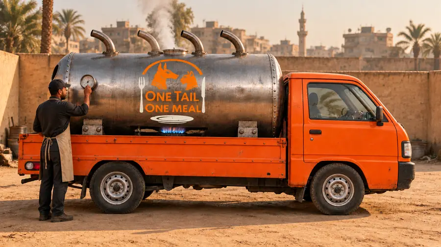
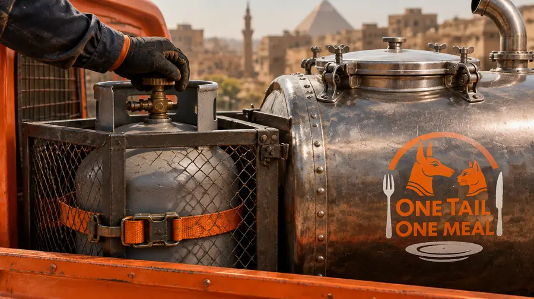
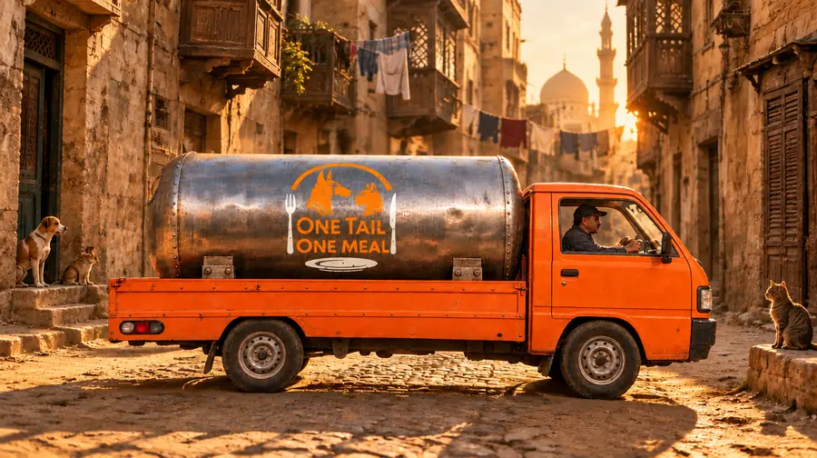
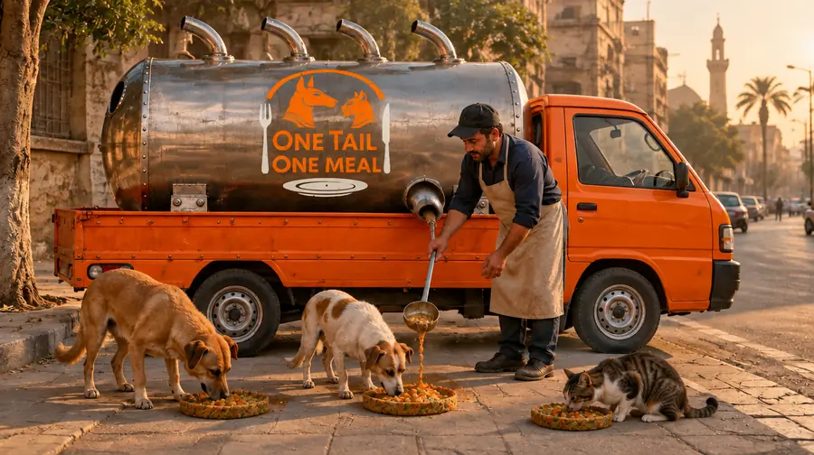

سيارة مرخّصة للسير على الطريق، يُركَّب على ظهرها برميل طهي بمواصفات غذائية: ستجمع وتطبخ وتتنقّل وتقدّم الطعام، ثم تُغسل جيدًا لتعيد الكرّة في اليوم التالي.
 تصوّر بالذكاء الاصطناعي
تصوّر بالذكاء الاصطناعيسيطهو برميل بمواصفات غذائية الطعام والشاحنة متوقفة، ثم يحفظه ساخنًا، لتخرج كل وجبة من الشاحنة ساخنة وآمنة.
 تصوّر بالذكاء الاصطناعي
تصوّر بالذكاء الاصطناعيصناديق محكمة الإغلاق وتبريد ومنطقة منفصلة للمواد النيئة، حتى لا يفسد شيء في عصرية قاهرية حارّة.
 تصوّر بالذكاء الاصطناعي
تصوّر بالذكاء الاصطناعيستخرج الوجبات من فتحة جانبية إلى الأماكن التي تعرفها الحيوانات بالفعل. لن تضطر أبدًا إلى المجيء إلينا.
 تصوّر بالذكاء الاصطناعي
تصوّر بالذكاء الاصطناعيسيُقدَّم الطعام في أطباق تؤكل، وتذهب المخلّفات إلى صناديق محكمة الإغلاق، وتُغسل كل محطة بعد التوقّف فيها.

منذ قرون والقاهرة تطهو الفول على مهل في قِدور معدنية كبيرة وتبيعه ساخنًا من العربات.
وبرميلنا سيعمل بالطريقة نفسها، لكلاب الشارع وقططه.
في داخله قِدر من الستانلس ستيل سعته 100 لتر فوق موقد غاز، يلفّه برميل معزول يحمل شعارنا.

تصوّر بالذكاء الاصطناعيفي مقرّنا، والمحرك مطفأ، سيُطهى الطعام على الغاز نحو ساعتين حتى يغلي تمامًا من الداخل.

تصوّر بالذكاء الاصطناعيسيُطفأ الموقد وتُغلق أسطوانات الغاز ويُثبَّت الغطاء قبل أن تتحرك الشاحنة.
لا طهي أثناء القيادة أبدًا.

تصوّر بالذكاء الاصطناعيسيحفظ البرميل المعزول الطعام فوق 60 °م طوال الطريق.
وستُقدَّم كل وجبة خلال أربع ساعات من انتهاء الطهي.

تصوّر بالذكاء الاصطناعيفي كل محطة سيُقدَّم الطعام على أطباقنا التي تؤكل.
وعند العودة إلى المقر، سيُفرك البرميل ويُعاد ملؤه وتُسجَّل درجات حرارته.
هذه أرقام التصميم، وسنختبرها بطهية كاملة قبل أول جولة.
سيركّب فنّي غاز مرخّص التوصيلات ويفحصها، وسنتأكد من التصاريح المطلوبة مع سلطات القاهرة قبل البناء.
 تصوّر بالذكاء الاصطناعي
تصوّر بالذكاء الاصطناعيفي الشوارع التي تكثر فيها حيوانات الشارع، وفي أماكن الإطعام التي يرعاها بالفعل المتطوّعون المحليون والجمعيات. سنذهب حيث الحاجة معروفة، لا حيث الصورة أجمل.
 تصوّر بالذكاء الاصطناعي
تصوّر بالذكاء الاصطناعيسائق محلي بأجر يحب الحيوانات، ومعه متطوّعون. بأجر، لأن الجولة التي تقوم على حسن النية وحده تتوقّف في الأسبوع الذي يمرض فيه أحدهم.
 شاشة التطبيق
شاشة التطبيقعدد الوجبات المقدَّمة، والمحطات التي توقّفنا فيها، والجدول — حتى يرى كل من تبرّع لنا بماله ما الذي اشتراه.

شاحنة توزّع اللحم في شارع عام يجب أن تستوفي القانون المصري، ونفضّل أن نتأخّر على أن يُغلق مشروعنا. هذه هي القائمة التي نعمل عليها.

حين نبدأ إطعام كلاب وقطط الشارع في القاهرة، لا نريد أن نترك خلفنا بلاستيكًا أو ورقًا. لذلك نخطّط لصنع أطباق من الخضار: نُنقذها من الهدر، ونضغطها، ونخبزها لتصبح طبقًا يستطيع الحيوان أكله بعد أن ينهي وجبته.
هذا ما يلزم لوضع أول شاحنة على الطريق، بشكل قانوني، وتشغيلها في أشهرها الثلاثة الأولى. لا أحد هنا يتقاضى راتبًا من هذا المبلغ — الأجر الوحيد في هذه القائمة هو أجر السائق.
حين تستقرّ الشاحنة الأولى، تتكرّر الخطة نفسها: الإسكندرية، ثم الجيزة، ثم أي مكان تجوع فيه حيوانات الشارع ويوجد فيه شخص محلي مستعد للقيادة.
أسئلة عن التبرع، أو تريد التبرع بطريقة أخرى؟ راسلنا على donations@onetailonemeal.com
ستحمل الشاحنة اسمنا لسبب. OneTailOneMeal.com — رحمة على عجلات، ودعوة مفتوحة للتبرّع أو التطوّع أو الإطعام معنا.
طرق المساعدة